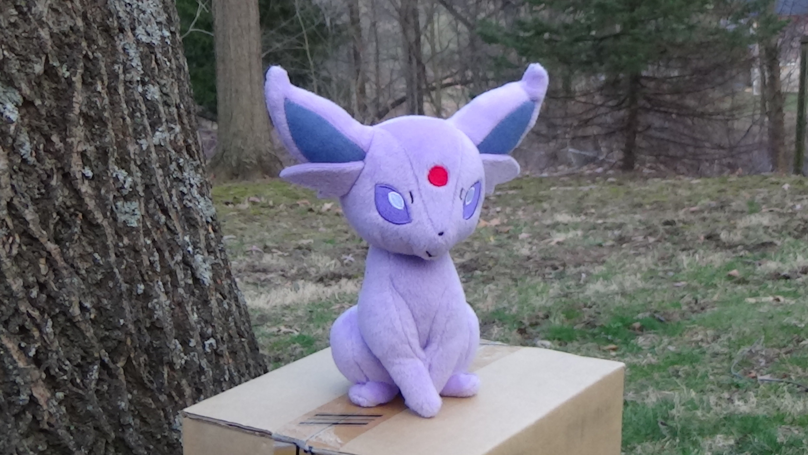
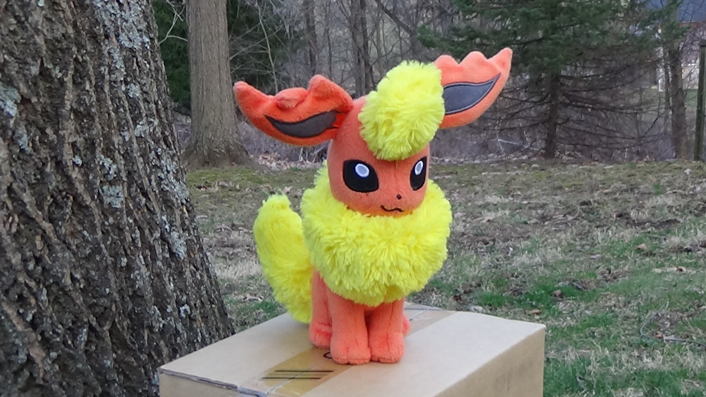
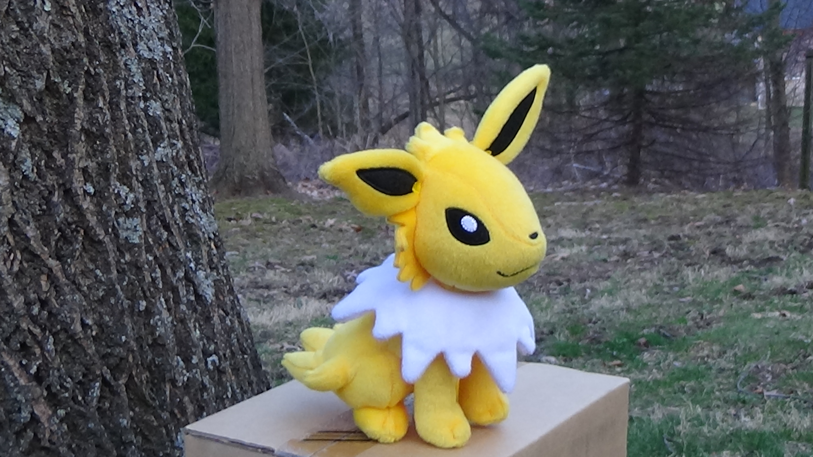

Pokémon Plushies!!!!!
Too bad the cool header font I use doesn't support the "é" character.
Name |
Image |
Description |
Lucario |
|
I don't think I'm exaggerating when I say this Lucario is probably the best thing in existence. He's tall (15"), very cuddly, and really well-made. Definitely my favorite plushie. He doesn't stand up on his own, though - this isn't a complaint from me, it's a good excuse to be always holding him. Click the image of him for a much more hi-res one (works great as a desktop background). |
Arceus |
 |
This Arceus is a limited-edition anniversary thing that a friend picked up for me. He's pretty well detailed, but a bit flimsy and not very cuddly. |
Eevee |
 |
Who doesn't love Eevee? This plushie is as cute and cuddly as the real thing (he's real in my heart). His neck fur is quite soft, and his expression is really cute. |
Espeon |
 |
Espeon isn't anything extremely special, but is still somewhat cuddly and pretty nice to look at. |
Flareon |
 |
Flareon's fur is impressively soft and fluffy. He's the softest plushie I have. |
Glaceon |
 |
Poor Glaceon is having some trouble with his ears, it seems. Not too impressed with this plush, to be honest. Looks pretty derpy. |
Jolteon |
 |
This Jolteon is surprisingly huggable and well-detailed, but his proportions are different than all the other Eeveelution plushies, which is kinda weird. |
Leafeon |
|
Leafeon is really well detailed - from his leafy tail to the little thorn things on his legs. Not really that huggable though. |
Sylveon |
|
Sylveon is also really well detailed and his colors are nice, but has trouble standing up on his own. He's a little bit taller and softer than the other ones, which makes him a bit more cuddly. |
Umbreon |
|
Not much to say about Umbreon really. He looks okay (except his eyes are too far apart), but is a bit too small to hug. |
Vaporeon |
|
For some reason, I really love Vaporeon. He is detailed really well and is a bit bigger than the other ones, and is really cuddly to boot. |